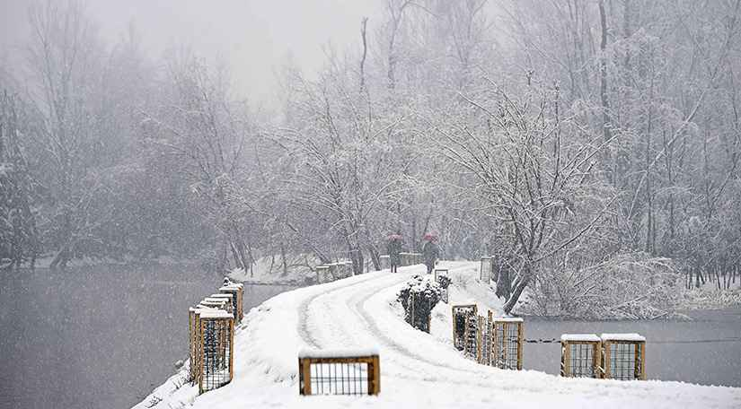

Kashmir is an eternally beautiful place
Snow Valley, Kashmir
Kashmir is an eternally beautiful place
with far too many things to offer. This
place in India is an ultimate choice to
bask in the lap of nature.

Yumthang Valley, Sikkim
Yumthang Valley as nature is awe-
inspiring in this valley. The tranquil
vibe of the river, millions of flowers
studded across the entire landscape.

Nubra Valley, Ladakh
This region occupies the northeastern
part and is often referred to as the
Valley of Flowers. Nubra Valley in Ladakh
is renowned for its majestic view of
mountain ranges covered in snow.

Khajjiar, Himachal Pradesh
Khajjiar in Himachal Pradesh which is
a surrogate of Switzerland Khajjiar is
a popular destination for tourists due
to its expansive meadows and abundant forest.

Shillong, Meghalaya
This place in the Northeast is among the
top recommendations when it comes to
tourist places in India.Epithet as the
Scotland of the East, the capital city
of Meghalaya is a perfect blend of old-
world charm and fresh essence.

Valley Of Flowers, Uttarakhand
India boasts a Valley of Flowers in
Uttarakhand is to heaven.This nature-
blessed place in India is blessed with
medicinal herbs as well as different
types of flora.

Gurudongmar Lake, Sikkim
Surrounded by snow-clad mountains and
glaciers, the Gurudongmar Lake in Sikkim
is famous for breathtaking views along with
sparkling and icy water that has curative
properties.